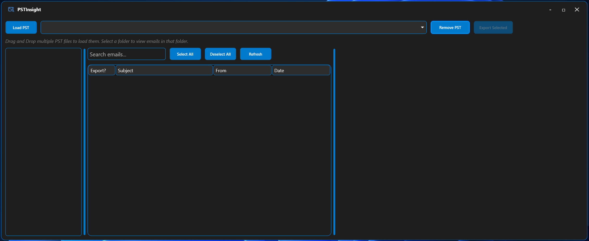
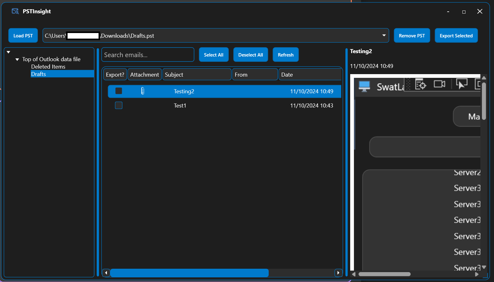

Swatto's Useful Utilities
Enhancing your productivity with custom-built tools
PSTInsight
PST File Viewer and Export Utility
Version: 2.0.0
PSTInsight is designed to view, search, and export items from PST (Personal Storage Table) files. It provides an intuitive interface for efficiently managing and extracting data from Outlook PST files.
Downloads: Loading...
SHA256 Checksum:
8425e5dfa81f3bf0934c98e6b4dce57364890612e6ec18408c186570c646bfde
Click to copy
Note: This executable is not digitally signed (yet).
Note: As of version 2.0.0, PSTInsight no longer requires Outlook to be installed.
Changelog
-
Version 2.0.0 (Current)
- Removed dependency on Microsoft Outlook.
- Integrated XstReader for PST file reading capabilities.
- Implemented MsgKit for MSG file creation and manipulation.
- Improved overall performance and stability.
-
Version 1.3.0
- Minor styling adjustments for improved user interface.
- Emails are now exported as single .msg files to a folder of your choice.
-
Version 1.2.0
- Complete UI overhaul.
- Uses WebView2 for email body display.
- Installs under the current user profile (No admin rights required).
-
Version 1.1.0
- Added drag and drop support for loading multiple PST files.
- Implemented multiple PST file management.
- Enhanced email search functionality with real-time filtering.
- Added support for viewing and saving email attachments.
- Improved UI responsiveness and performance.
-
Version 1.0.0
- Initial release of PSTInsight.
- Basic PST file loading and viewing capabilities.
- Email export functionality.
- Simple search feature for emails.
Acknowledgments
PSTInsight 2.0.0 owes a significant portion of its new codebase to two excellent open-source projects:
- XstReader - An open source viewer for Microsoft Outlook's .ost and .pst files.
- MsgKit - A .NET library for creating MSG files without the need for Outlook.
I extend my gratitude to the developers and contributors of these projects for their invaluable work.
Screenshots


Key Features
- Application Memory: PSTInsight will remember the last PST files loaded when being reopened.
- Multiple PST File Support: Load and manage multiple PST files simultaneously, with drag-and-drop loading capability.
- Intuitive Folder Navigation: Easy-to-use tree view for navigating PST folder structures.
- Advanced Search Functionality: Quickly find emails using real-time filtering and search.
- Selective Email Export: Choose specific emails for export using checkboxes.
- Attachment Management: View and save email attachments directly from the interface.
- Email Preview: Built-in viewer for email content, including HTML formatting.
Useful Tips
- Drag and Drop PST Loading: Simply drag PST files into the application window to load them quickly.
- Efficient Navigation: Use the folder tree view on the left to quickly navigate through PST file contents.
- Quick Search: Utilize the search box to find specific emails by subject or sender in real-time.
- Attachment Handling: Click on attachment names to save them individually without exporting the entire email.
- Multiple PST Management: Switch between loaded PST files easily using the dropdown menu.
SwatLauncher
Remote Desktop Connection Manager
Version: 1.2.0
SwatLauncher is a Windows application designed for system administrators to simplify connecting to multiple RDP hosts. It enables you to save and search a list of hosts and associated descriptions for easy RDP connection.
Downloads: Loading...
SHA256 Checksum:
0335ab2028d1db17f16a0473c3534b92199959246a6b870d128d524b572171b4
Click to copy
Note: This executable is not digitally signed (yet).
Changelog
-
Version 1.2.0 (Current)
- Added ability to add/modify credentials for individual hosts where required.
-
Version 1.1.0
- Removed window animations.
- Added 1 second timer to shift-key press to prevent accidental deletions.
- Various bug fixes and performance improvements.
-
Version 1.0.0
- Initial release of SwatLauncher.
Screenshots


Key Features
- Secure Credential Management: Leverages Windows Credential Manager for secure RDP credentials storage.
- Active Directory Scanning: Can scan a specified Active Directory domain to populate a list of servers and descriptions.
- Hostname and Description Updates: Easy addition, updating, and deletion of hostname and description entries.
- Search Functionality: Allows searching of hostnames and descriptions.
- Double-Click RDP Connections: Instant RDP session launch with a double-click of a hostname entry.
- System Tray Integration: Minimizes/Closes to the system tray for clutter-free desktop access.
Useful Tips
- Credential Deletion: Hold shift for 1 second on the Credential Input window to delete your stored 'SwatLauncher' credentials from Windows Credential Manager.
- CSV file Deletion: Hold shift for 1 second on the Manage Hosts window to delete the CSV file entirely.
- Close the Application: Minimize/Close the application and right-click the system tray icon to exit.
SwatLogSweep
Event Log Search Utility
Version: 1.2.0
SwatLogSweep is a Windows application designed for efficient searching of Windows event logs. It provides a user-friendly interface to search the entire event log for specific keywords and presents the results in an easy-to-read format.
Downloads: Loading...
SHA256 Checksum:
5b96acb06d484ee365b815e3f02e68ae94a649c38d587a9eaf4b7f3d29f7cac1
Click to copy
Note: This executable is not digitally signed (yet).
Changelog
-
Version 1.2.0 (Current)
- Added export to CSV functionality.
- Improved searching algorithm.
-
Version 1.1.0
- Adjusted application layout.
- Added sorting capabilities to the ListView headers.
- Detection of Admin and Standard User run modes (affects searching capability).
- Added Event ID searching.
-
Version 1.0.0
- Initial release of SwatLogSweep.
Screenshots


Key Features
- Comprehensive Log Search: Search across all Windows event logs (if running in admin mode) for specific keywords.
- Efficient Results Display: Clearly presented search results for quick analysis.
- Event ID Searches: Allows for specific eventID searches.
Useful Tips
- Run As Administrator: Full event log searches require administration rights.
- Keyword Search: Selecting an event will highlight where the keyword was found within the event description.
GitHub Discussions
Ask questions and share your suggestions on the GitHub Discussions page.
Visit GitHub DiscussionsWhy Participate?
- Submit Bugs: Report bugs you have found with the utilities.
- Get Support: Ask questions and get help from me directly.
- Share Ideas: Suggest new features or improvements for the utilities.
- Connect: Engage with other users.